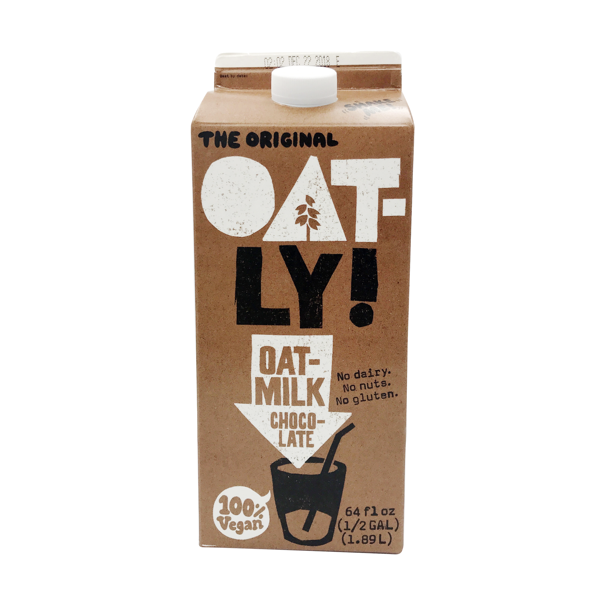

Vegan Food Can Help People Who Keep Kosher
Kosher laws, specifically kosher meat have become very important to the Jewish community around the world. Something I find interesting about kosher laws is that with the rise of vegan meat, people who keep kosher have the ability to have "meat" or "dairy" at times they wouldn't normally be able to. They would be able to have something like a cheese burger by using an impossible burger or any kind of alternative meat. They can use vegan milk to bake a dessert or even just a glass of milk for after a meat meal instead of having to wait a few hours to have a glass of cow milk. Over the last couple of years vegan alternatives have gained popularity and become more and more accessible. With vegan food not containing meat or dairy products it is automatically kosher and becomes an immediate safe food for people who keep kosher. Additionally, when there is a large portion of kosher food that has neither meat or dairy (pareve) it is sometimes also vegan, this allows for vegans to have access to a wider variety of foods. Vegan meats can help people who keep kosher have more options and access to different foods, as kosher/pareve foods (though they sometimes contain eggs) can give vegans access to a wider variety of foods.